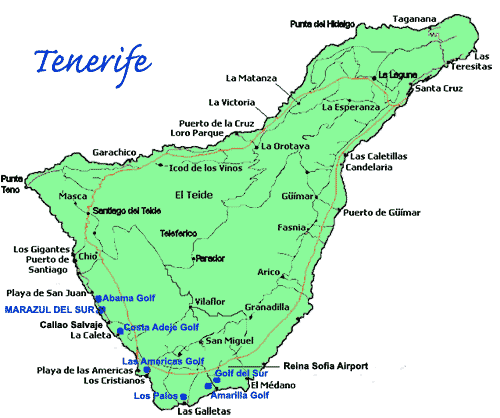

Cách bờ biển Maroc vài dặm, đối diện với dãy núi Atlas, giữa các đảo Acores và đảo Cap-Vert mọc lên hòn đảo Cananes nữ hoàng với đỉnh núi hút vào tầm cao 7500 mét ẩn khuất trong mây quanh năm bao phủ.
Không khí nơi đây thật mát mẻ và trong lành đến độ người ta ngờ đỉnh của nó chỉ cách 30 dặm và từ các đỉnh đồi trên đảo người ta có thể quan sát được một con tàu cách đó 12 dặm trong khi thông thường chỉ 7 dặm là không nhìn thấy được gì.
Tại đây, dưới cái bóng của núi lửa khổng lồ, giữa những hòn đảo mà người xưa gọi là Đảo May Mắn, người ta có thể quan sát được eo Gibraltar, đoạn đường hai châu Mỹ sang Tây Ban Nha và con đường từ Ân Độ sang châu Âu và ngược lại. Surcouf đã cho tàu dừng tại đó lấy nước, thực phẩm tươi và mua một trăm chai vang hiệu Madère còn phổ biến ở thời đó nhưng ngày nay đã hoàn toàn biến mất nhường chỗ cho loại rượu nhạt mà người ta gọi là vang Marsala.
Từ Saint-Malo đến Ténériffe, ngoài luồng gió không thể tránh khỏi từ vịnh Gascogne thì thời tiết rất đẹp và đường thông với tàu cướp biển, loại tàu chuyên cướp hàng từ tàu buôn nước ngoài, thì đường thông tức là họ không gặp một tàu tuần tra nào săn đuổi, ngoài ra, để tránh tàu chiến Anh, người ta có thể dựa vào đường chạy xuất thần của tàu Revenant, đang áp sát, nó có thể đạt đến tốc độ 12 nơ một giờ. Trời đẹp cho phép Surcouf có thể cho tập bắn như thường lệ. Một lượng chai lớn treo lủng lẳng đã bị ông và nhất là René hầu như không bắn trượt cái nào.
Các thủy thủ khác không bao giờ đạt đến trình độ như thuyền trường vỗ tay rào rạt cho anh chàng thủy thủ trẻ. Nhưng điều khiến các sĩ quan đặc biệt ngưỡng mộ đó là những khẩu súng đẹp nhờ vào chúng anh thực hiện các kỳ công cực kỳ khéo léo.
Các vũ khí ấy gồm một khẩu súng trường nòng đơn giản dùng để săn các loại động vật nhỏ bằng đạn chì và một khẩu cạc bin cùng cỡ nòng có rãnh dùng để săn thú lớn hay bắn người ở những nơi con người đạt ngang hàng với loài thú hại. Hai hộp nhỏ hơn mỗi hộp đựng một cặp súng ngắn, trong đó, một cặp loại thường dùng đấu tay đôi, cặp kia dùng trong chiến đấu có nòng kép.
Ngoài ra, René còn tự tay làm một lưỡi rìu tấn công cho mình nhìn đơn giản như một mầu sắt nâu không trang trí hoạ tiết nhưng được rèn cẩn thận và rất sắc, nó được tra vào một cái cán nhỏ chỉ bằng ngón tay. Tuy nhiên, vũ khí bất ly thân anh đặc biệt chăm chút luôn đeo trên cổ bằng sợi dây chuyền bạc lại là một con dao găm nhỏ có hình giống dao Thổ Nhĩ Kỳ tức là hơi cong và giống như những người A rập ở Dams vẫn làm, với lưỡi dao đã cất kỹ, nó có thể chém đứt một chiếc khăn mỏng đang bay.
Thuyền trưởng Surcouf hả lòng hả dạ khi được René lên tàu của mình, nhất là sau khi phong cho anh ta làm thư ký riêng, điều cho phép ông được liên tục nói chuyện với anh. Thuyền trưởng Surcouf là người đăm chiêu và độc đoán vốn ít khi tán chuyện, tuy nhiên để giữ được sự phục tùng của đám quân tứ xứ và từng làm nhiều nghề khác nhau, ông rất quan tâm đến việc vui chơi và giải trí cho họ. Ông cho đựng trên tàu Revenant hai phòng tập, một ở đuôi thuyền dành cho các sĩ quan và một ở phía trước mũi dành cho các thủy thủ. Ông cũng dạy họ tập bắn, chỉ có điều các sĩ quan bắt buộc bắn lên mạn phải còn hạ sĩ quan và thủy thủ ở bên mạn trái.
Chỉ thuyền phổ, ngài Bléas mới được vào phòng của ông bất cứ lúc nào vì bất cứ chuyện gì. Nhưng đối với các sĩ quan khác, thậm chí cả trung uý, muốn vào trong ấy phải có lý do nghiêm chỉnh. René được miễn mọi thủ tục đó, nhưng e những chiến hữu khác ghen tị, anh ít khi tận dụng đặc quyền ấy và thay vì đến phòng Surcouf, anh để cho ông ta đến tìm mình.
Căn phòng của viên chỉ huy vô cùng sang trọng theo kiểu nhà binh: hai khẩu đại bác cỡ 24 ly được ngụy trang hoàn toàn, làm bằng đồng nhưng nhìn như bằng vàng chừng nào chúng còn được anh chàng da đen Bambou chăm sóc vì anh này có sở thích đặc biệt là soi mình vào đó. Trướng phủ tường toàn là vải Cachemire mang từ Ấn Độ, các loại vũ khí lấy từ khắp nơi được dùng làm đồ trang trí. Một chiếc võng đơn giản mắc giữa hai khẩu đại bác dùng làm giường. Ngoài ra phía dưới chiếc võng là một tấm thảm nơi Surcouf hay nằm ngủ thay vì nằm võng. Khi chuẩn bị chiến đấu, đồ đạc trong phòng có thể bị xộc xệch do va chạm với những đồ bị lấy đi và phòng này dành chỗ cho các pháo thủ.
Khi Surcouf đi dạo trên boong, ông ít khi nói chuyện với viên phó. Khi ấy mọi người đều vội nép sang một bên nhường lối cho ông. Bản thân ông, để tránh làm phiền họ, ông cũng thích đứng dựa vào một cây cột trên cao.
Cách ông gọi anh chàng da đen Bambou là gõ vào một chiếc trống mà âm thanh của nó vang dội khắp con tàu. Dựa vào âm lượng to hay nhỏ, người ta có thể đoán được tâm trạng của ông.
Tại chốn địa đàng ấy, từ tám ngày qua ông cho người của mình đổ bộ xuống chân ngọn Ténériffe, thoả chí săn bắn và câu cá. Ngoài ra, Surcouf còn bổ sung thêm trò vui mới là khiêu vũ.
Tất cả các buổi tối, dưới nền trời đính đầy những vì sao chưa từng biết đến ở châu Âu, đến giờ các loại cây thơm toả hương dìu dịu, gió biển thổi vào mát rượi, trên lớp cỏ mềm và mịn như một tấm thảm là các cô thôn nữ trong trang phục tuyệt đẹp lại xuống từ các làng Chasna, Vilafior và Anco. Ngày đầu tiên, họ rất bối rối không biết tìm đâu ra nhạc xứng với các vũ công nam minh hoạ và các vũ nữ xinh đẹp. Nhưng René đã nói:
- Hãy tìm cho tôi một cây đàn ghi ta hay vĩ cầm, để xem tôi còn nhớ nghề cũ không.
Để tìm cây đàn ghi ta ở một làng Tây Ban Nha thì chỉ việc với tay là được. Ngày hôm sau, René chỉ việc chọn trong mười cây vĩ cầm và rất nhiều đàn ghi ta lấy một thứ, anh cầm đại một chiếc và ngay âm thanh đầu tiên, người ta đã nhận ra đôi tay bậc thầy. Ngày hôm sau dàn nhạc đã nổi lên giữa tiếng sáo, trống và tiếng nhạc cụ Tây Ban Nha dưới sự chỉ huy của René.
Đôi khi René bị những kỷ niệm xưa cuốn đi khiến anh quên cả điệu nhảy lẫn các vũ công để chìm vào một nỗi buồn bất thần. Thế là điệu nhảy dừng lại, người ta đặt tay lên môi ra hiệu im lặng tiến lại gần anh. Cơn muộn phiền kéo dài lâu hay chóng và mỗi lần như thế xong, Surcouf lại tự nhủ: Vợ mình nói đúng, quả nhiên có nỗi thất tình lẩn khuất đâu đây.
Một buổi sáng, René bị một cuộc chuẩn bị tấn công đánh thức dậy. Họ nhận ra phía thượng miền đảo Cap-Vert cách đó ba dặm trên biển có một chiếc tàu mà qua hình dạng cánh buồm cho thấy đó là tàu Anh. Khi nghe tiếng kêu "Một thuyền buồm!", lập tức Surcouf chồm lên boong và ra lệnh chuẩn bị tấn công. Mười phút sau, trong lớp vải buồm dày lên, trong tiếng va chạm chuẩn bị cuộc chiến, con tàu quay ra biển tiến về phía chiếc tàu Anh.
Năm phút sau, đến lượt René lên boong tay sách súng cạc bin, súng ngắn hai viên đeo trên thắt lưng.
- Có lẽ chúng ta sắp vui đùa một chuyến - Surcouf nói.
- Cuối cùng cũng đến lúc - René nói.
- Cậu muốn tham gia không?
- Có chỉ có điều tôi muốn ngài dành cho tôi một chỗ để không ảnh hưởng đến ai.
- Được thôi! Hãy đứng cạnh tôi và hạ bất cứ tên nào chĩa súng về phía chúng ta.
- Bambou đâu? - Surcouf gào lên.
Tên da đen lại gần ông.
- Đi tìm cho ta Sấm sét lại đây.
Sấm sét là tên khẩu súng trường của Surcouf, còn một khẩu vừa tên là Badin.
- Và mang cả súng cho ngài René nữa - Surcouf nói thêm.
- Không cần đâu - René chen vào - tôi có sinh mạng bốn kẻ trong đai lưng và một tên nữa trên tay đây rồi. Với một kẻ nghiệp dư, tôi nghĩ thế cũng là quá nhiều.
- Quân Anh làm gì thế, Bléas? - Vừa hỏi Surcouf vừa trao súng cho viên thuyền phó, với ống nhòm theo dõi quân Anh.
- Chúng thay neo và tìm cách tránh chúng ta, thưa chỉ huy.
- Chúng ta có theo kịp bọn chúng không?
- Đuổi được tôi thấy điều này rất hiển nhiên.
- Ê này - Surcouf nói to - hãy giương buồm vẹt và buồm phụ lên để trên.
Revenant vừa lượn điệu đà vừa cảm nhận được lệnh tăng tốc của ông chủ. Về phần mình, quân Anh cũng căng hết buồm song như thế chỉ càng tạo thuận lợi cho thuyền của ngài Surcouf.
Thuyền trưởng Surcouf ra lệnh bắn một quả đạn để nhận dạng quốc gia rồi giương cao lá cờ ba màu để chứng tỏ mình thuộc nước nào. Tàu Anh cũng làm như vậy và chẳng mấy chốc hai tàu đã rơi vào tầm đạn của nhau, tàu Anh khai hoả bằng hai phát đại bác trong hy vọng hạ cột buồm tàu cướp biển hay làm hư hỏng chỗ nào đó để bắt nó giảm tốc độ. Nhưng phát đạn đó gây ra ít thiệt hại và chỉ làm bị thương hai người. Quả đạn thứ ba vọt đến trong tiếng hú kinh hãi và không tả được của René, anh chàng này còn chưa quen với sự phá huỷ nên không biết đó là chuyện gì.
- Cái quỷ gì vừa bay qua đầu chúng ta thế? - René hỏi.
- Anh bạn trẻ của tôi - Thái độ của người đáp cũng thản nhiên như người hỏi - Đó là hai quả đạn bay. Cậu biết cuốn tiểu thuyết của ngài Laclos chứ?
- Cuốn nào?
- "Những mối liên hệ nguy hiểm".
- Không.
- Đó là kẻ phát minh ra hai quả đạn rỗng vừa bay qua đầu anh đấy. Nó có làm anh khó chịu không?
- Thật tình là không, nhưng khi khiêu vũ, tôi muốn biết tên các nhạc cụ trong dàn nhạc nữa cơ.
Surcouf trèo lên ghế trực và nhận thấy họ chỉ cách nửa tầm đại bác.
- Các anh đã chuẩn bị cỡ 36 chưa?
- Rồi thưa chỉ huy. - Lính pháo binh đáp.
- Các anh phóng thế nào?
- Ba loạt đạn.
- Chuẩn bị châm lửa.
Và khi nhìn thấy bên tàu địch cũng làm tương tự ông hô:
- Bắn!
Quân Anh đổ vật ra boong, con tàu bị hư hại nặng.
Sau đó ông chống tay lên thanh chắn mạn phải nói:
- Cứ để chúng đến gần hơn!
Khi hai bên ở trong tầm súng, Surcouf nhả lại phát đạn từ khẩu Sấm sét và đã có hai kẻ đổ từ bục của cột buồm lớn xuống sàn tàu. Nhưng ông đã để rơi súng, René nhìn thấy vội chìa súng của mình ra:
- Súng của ngài, nhanh lên!
Surcouf nhún vai nhanh rồi nhả đạn. Ông vừa nhìn thấy trong buồng thuyền trưởng quân Anh có một tên bắn pháo chuẩn bị châm lửa cho khẩu cỡ 12 dội sang thuyền của ông. Những trước khi châm lửa, hắn đã tử vong. - Bằng hành động ấy, Surcouf đã vừa cứu mạng mình và cả ban tham mưu của ông. Đứng cạnh ông, René hạ một tên pháo binh vừa chạy đến thay cho kẻ bạc mệnh trước đó bằng súng ngắn vì hai tàu đã sát nhau. Rồi anh hạ ba tên khác trên cột buồm lớn và cột phụ. Hai tàu chỉ cách nhau chưa đầy chục bước thì Surcouf hét to:
- Bắn mạn trái!
Một cơn mưa đạn vãi từ tàu Revenant lên boong tàu Anh.
Lúc quân Anh chuẩn bị khai hoả giàn pháo bên mạn phải thì nó nhận một cú bồi khủng khiếp nữa từ tàu Revenant làm vỡ vụn một bên thành. Cột buồm chính đổ gục khiến các chân gác trên đó vội nhảy xuống biển.
Giữa tiếng động long trời lở đất ấy, người ta nghe rõ giọng của Surcouf ra lệnh:
- Tấn công lên tàu!
Tiếng hét ấy được 150 giọng nhắc lại rồi họ tràn lên cho đến khi có tiếng hét khác từ trên tàu Anh.
Cờ đầu hàng đã hạ!
Trận chiến kết thúc. Tàu chặn có hai người chết và ba người bị thương trong khi tàu Anh đếm được 12 người thiệt mạng và 20 người khác bị thương.
Thuyền trưởng Surcouf cho dẫn thuyền trưởng tàu Anh đến.
Kẻ này khai con tàu ông vừa chiếm tên là Ngôi Sao Liverpool được trang bị mười sáu khẩu pháo cỡ 12 ly. Nhận thấy nó ít giá trị, Surcouf bằng lòng chỉ lấy tiền.
Khoản tiền lấy được là 600 đồng bảng Anh. Surcouf chia toàn bộ cho thủy thủ đoàn làm tiền thưởng để khích lệ tinh thần đã hăng hái của họ còn ông không giữ lại gì cho mình. Nhận thấy con tàu kia có thể gặp một tàu Pháp khác nhỏ hơn và nó sẽ trả thù vì vụ thua vừa rồi nên ông ra lệnh cho Bléas sang tàu bên đó, ném hết pháo và thuốc nổ xuống biển.
Sau đó, tàu Revenant lại tiếp tục lên đường đi về phía mũi Hảo Vọng trong mềm tự hào trước trận chiến vừa rồi, với con tim sung sức sau tám ngày nghỉ ngơi ở Ténériffe và sung sướng có được một con người rộng lượng như René, người mà có ngày sẽ trả khoản hạ thủy của con tàu một cách trung thực.
Tuy nhiên, trong khi đến cái ngày hôm ấy, cả thủy đoàn còn việc khác phải làm hơn là dâng cho Hải Vương một cuộc diễu hành vĩ đại trước các vị hải thần.